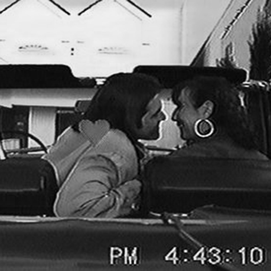

/ Artist Collection /
Lawrence Weiner
B. 1942, New York
Lawrence Weiner is a sculptor1 whose medium is language. His texts describe material processes and physical conditions2; they delineate space and indicate location. Since 1968, when he concluded that the actual construction of a work was not critical to its existence in the world, Weiner has authored hundreds of linguistic artworks. Prior to this time, his material sculptures had been prefaced by titles that dictated the means of their fabrication3. When the outdoor installation was damaged, Weiner realized that the essence of a work is textual and not physical. This led him to the following formulation, first published in 1968, which continues to outline his conceptual4 approach to artmaking: “(1) The artist may construct the piece. (2) The piece may be fabricated. (3) The piece need not be built. Each being equal and consistent with the intent of artist, the decision as to condition rests with the receiver upon the occasion of receivership.”¹
In a radical restructuring of the traditional artist/viewer relationship, Weiner shifted the responsibility of the work’s realization to its audience, while also redefining standard systems of artistic distribution. A work such as A STAKE SET5 (1969) can be made or merely spelled out on a museum wall, but it can also be read in a book or heard if uttered aloud. Weiner’s art can literally be disseminated by word of mouth. Much of the early work rehearses simple actions involving basic substances—pouring paint6, digging trenches7, removing plaster—and, like all subsequent examples, are stated in the past tense to avoid the authoritative tone of a command. Others are more spectacular, involving firecrackers8 and dynamite9. THE RESIDUE OF A FLARE IGNITED UPON A BOUNDARY(1969), a piece that Weiner actually executed in Amsterdam10 for the Stedelijk Museum’s11 pivotal 1969 Conceptual art exhibition Op Losse Schroeven: Situaties en Cryptostructuren (Square Pegs in Round Holes:
Structures and Cryptostructures12), is poetic in its ability to evoke vivid imagery, while at the time suggesting coded systems of communication. Weiner gradually extended his engagement with language to ready-made13 structures, such as idioms, clichés, and proverbs, which underscore the contingent nature of meaning when encountered in different contexts. The Christian burial14 recitation “Earth to Earth, Ashes to Ashes, Dust to Dust” becomes, in nonliturgical circumstances, a simple meditation on materials and processes of transmutation (EARTH TO EARTH ASHES TO ASHES DUST TO DUST [1970]).
1
 2
2
 3
3
 4
4
5
 6
6
 7
7
 8
8
9
 10
10
11
 12
12
 13
14
13
14